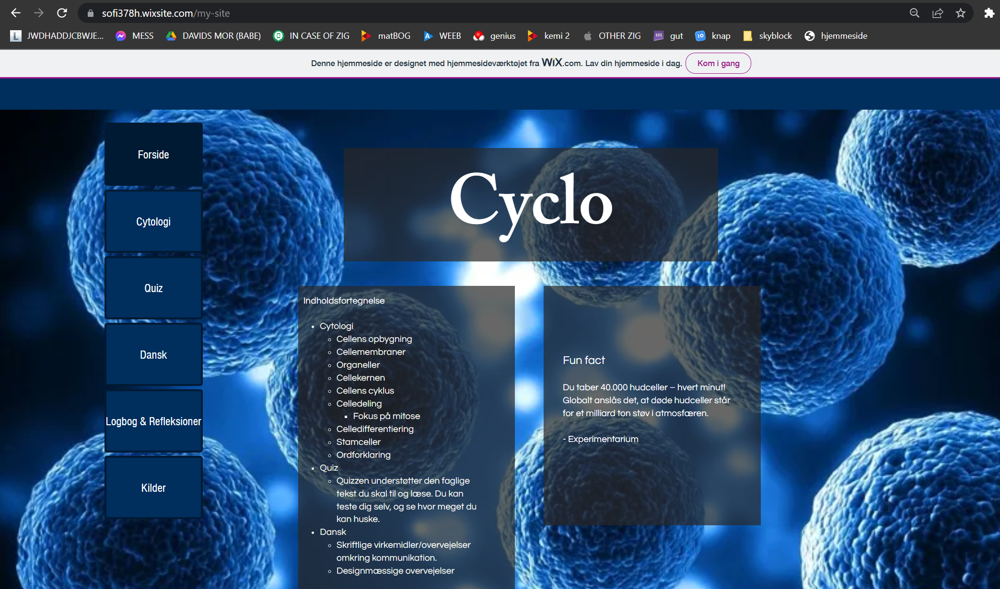
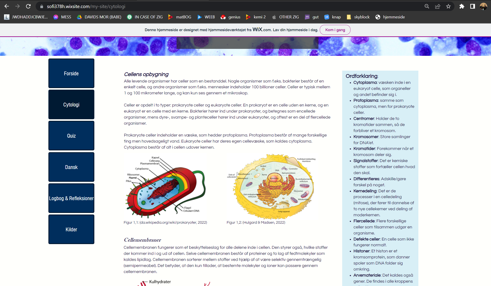
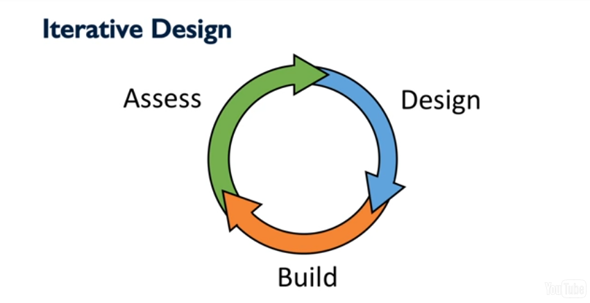

Om mig og refleksion
Mit navn er Gregers, jeg bliver ofte kaldt Greek, jeg går i 1.s på Slotshaven Gymnasium.
I min fritid laver jeg musik på min computer, spiller på min computer, prøver at lære guitar, eller hvad end jeg ellers kan finde på at lave.
Jeg synes det har været virkeligt sjovt at have informatik i skoletiden. Jeg har lært virkelig meget. Det har i hvert fald været meget nyt, men også spændende.
Det har været forfriskende at have et fag hvor man både kan lære og være kreativ på samme tid. Min far er også programmør,
så det kunne sagtens være noget jeg tager yderligere interesse i senere i mit liv.
SO2
I vores anden SO forløb (Digitalisering) fik vi som opgave at lave en informerende hjemmeside der skulle henvende sig til
de kommende 1.g elever. På hjemmesiden skulle vi formidle et naturvidenskabeligt emne i biologi eller fysik.
Min gruppe bestående af Feline, Sofie, Kasper og jeg valgte at formidle emnet cytologi, mere specifikt cellebiologi.
Vores gruppe valgte at bruge en hjemmeside der hedder Wix, for at lave vores hjemmeside. Vi tænkte at det ville være for stor
en udfordring at lave hjemmesiden i HTML gennem Visual Studio Code.
Her er nogle billeder af hjemmesiden (zoom ind for højre resolution):


Design af IT-systemer
Design af IT-systemer forløbet løbte bl.a. igennem grundlæggende viden om programmering, principper inden for grafisk design og spiral modellen, og jeg føler det var en god
introduktion. Det vi lærte om programmering kommer jeg ind på i inde på programmering-siden.
Tryk her hvis du vil læse om HTML, eller lad vær...
Graphic Design Principles
Der er 5 kerne-elementer som skal overholdes i grafisk design:
Kontrast
Det er godt at have elementer med indlysende anderledes og unikke elementer, så de er til at skille fra hinanden, og for at bringe opmærksomhed til dem.
Repetition
Uden repetition er det bare kaos. Repetition betyder at noget er gentagende, i dette tilfælde kunne det være et farvetema, eller en animationsstil.
Alignment
Nøglen til en smuk hjemmeside. Elementer der er "korrekt" opstillet med lige meget afstand mellem dem, er hvad alignment går ud på.
Proximity
Proximity går ud på at vise at elementer der er i nærheden af hinanden, er relateret til hinanden.
White space
White space er præcis hvad det lyder som. White space er den tomme del af f.eks. Google hovedsiden hvor der kun er hvidt. White space hjælper hovedelementer med at fange opmærksomheden.
Tryk her hvis du selv vil læse om det.
Spiral Modellen (The Progession of Iterative Design)

Spiral modellen viser den måde man skal tænke for at forbedre bruger oplevelsen (user experience).
1. Assess
Man kigger på hvad brugerne har brug for i ens produkt for at forstå hvilke problemer man vil blive udsat for.
2. Design
Delen hvor man brainstormer. Man udtænker ideér ud fra hvad vi lærte i assess-fasen.
3. Build
Man begynder at lave prototyper ud fra ens ideer. Prototyperne kan bruges til at få feedback.